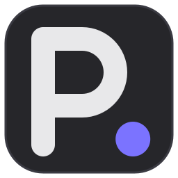
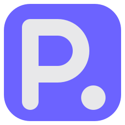
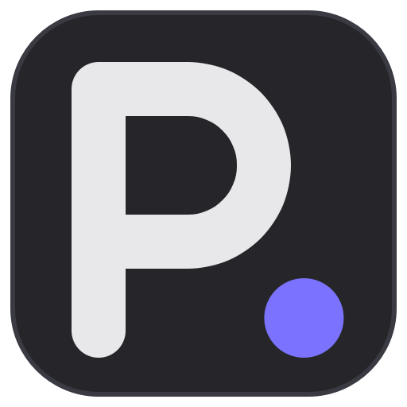
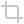
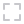
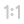
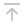
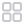
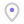
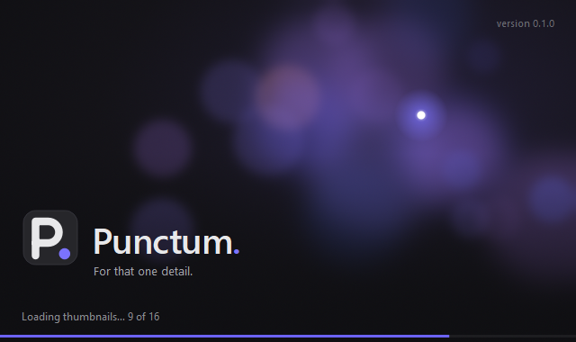

Punctum.
Zasady znaku, kolorów, ikon i tonu wypowiedzi programu Punctum. Wszystkie grafiki
z tej strony to pliki, których program naprawdę używa — generuje je tools/make_assets.py.
01Idea
Punctum to pojęcie Rolanda Barthes’a ze „Światła obrazu”: ten jeden szczegół fotografii, który kłuje patrzącego — przypadkowy, niedający się zaplanować. Jego przeciwieństwem jest studium, czyli to, co na zdjęciu rozpoznajemy rozumem. Po łacinie punctum to też po prostu kropka.
Z tego bierze się cała identyfikacja: litera P i jedna kropka. Kropka jest jedynym elementem w kolorze marki — tak jak punctum jest jednym miejscem, które przyciąga wzrok. W interfejsie fiolet oznacza to samo: to, co wyróżnione, aktywne albo ważne teraz.
02Znak
Dwa warianty tego samego znaku. Różnią się tylko kolorem kafla — kształt i proporcje są identyczne.
logo.svg — w programie: okno „O programie”, ekran startowy, README.
Na ciemnym tle kafel ma obrys #3a3a42, żeby nie zlał się z tłem.
logo-fiolet.svg, punctum.ico — ikona okna,
paska zadań i skrótów. Czytelny na jasnym i ciemnym pasku zadań, także przy 16 px.Znak ze słowem
Nazwa zawsze z kropką w kolorze marki. Odstęp znak–nazwa: ¼ szerokości znaku. Wysokość wersalików nazwy ≈ 0,5 wysokości znaku.
03Konstrukcja i rozmiary
- Siatka 256 × 256, kafel 240 × 240 z promieniem narożnika 54.
- Litera P: kreska 34, zaokrąglone zakończenia i narożniki. Brzuszek to półokrąg o promieniu 48.
- Kropka: średnica 50 (≈ 1,5 grubości kreski), stoi na linii pisma — dolna krawędź kropki równa z końcem trzonu, jak prawdziwa kropka po literze.
- Grupa P + kropka jest wyśrodkowana optycznie, nie geometrycznie — przesunięcie (−10, −4).
- Pole ochronne: wokół znaku wolne miejsce co najmniej średnicy kropki.
- Najmniejszy rozmiar: 16 px — i to jest główne kryterium kształtu. Pliki .ico mają każdy rozmiar rastrowany osobno z wektora.
04Czego unikać

- Nie przestawiamy kropki (nad literę, do środka brzuszka) i nie zmieniamy jej koloru na biały na ciemnym kaflu.
- Nie składamy nazwy innym krojem ani bez kropki; nie piszemy „PUNCTUM” wersalikami.
- Nie używamy migawki ani obiektywu jako symbolu programu.
05Kolory
Paleta jest ciemna i neutralna, bo zdjęcia ogląda się na szarym tle bez zafarbu. Jedynym kolorem jest fiolet — używany oszczędnie, jak punctum: jedno miejsce na raz.
#6c63ffKafel ikony programu, pasek postępu, zaznaczenie. Kolor marki.#7b73ffKropka znaku na ciemnym tle, punkt w ikonie geotagu.#b9b3ffAkcenty tekstu i obwódek w interfejsie.#e8e8eaLitera P, nazwa programu, główny tekst.#c8c8ccKreska wszystkich ikon narzędzi.#8a8a90Tekst drugorzędny, podpisy, stan ładowania.#3c3c42Obwódki, separatory, obrys ciemnego kafla.#26262aTło znaku w wariancie ciemnym.#1e1e20Tło okna programu.#0f0f12Najciemniejsze partie ekranu startowego.06Typografia
Segoe UI — krój systemowy Windows, ten sam w nazwie, interfejsie i dokumentach. Nie dołączamy własnych fontów: program ma wyglądać jak część systemu, a zdjęcie ma być najciekawszą rzeczą na ekranie.
| Rola | Krój | Rozmiar |
|---|---|---|
| Nazwa „Punctum.” | Segoe UI Semibold, światło −0,5 px | 40 px (ekran startowy), 46–58 px (dokumenty) |
| Hasło | Segoe UI | 13 px |
| Interfejs | Segoe UI | systemowy (9 pt) |
| Stan ładowania, wersja | Segoe UI | 11–12 px, szarość opisu |
07Głos i hasła
- Krótko, zdanie z kropką na końcu — kropka to też punctum.
- Mówimy o zdjęciu i patrzeniu, nie o funkcjach programu. „Nieniszczący edytor RAW” to opis do okna „O programie”, nie hasło.
- Do fotografa na „ty”, bez wykrzykników i bez żargonu marketingowego.
- Każde hasło ma odpowiednik angielski o tym samym sensie, nie dosłowny przekład.
Ekran startowy losuje hasło przy każdym uruchomieniu (HASLA w punctum/app/ekran_startowy.py,
przekład w punctum/lang/interfejs.en.json):
| Polski | English |
|---|---|
| Dla tego jednego szczegółu. | For that one detail. |
| Każde zdjęcie ma swój punkt. | Every photo has its point. |
| Wywołaj to, co ważne. | Develop what matters. |
| Twoje zdjęcia, twoje światło. | Your photos, your light. |
| Znajdź to, co przyciąga wzrok. | Find what catches the eye. |
| Wydobądź światło z cienia. | Bring light out of the shadows. |
| Każdy kadr kryje swój szczegół. | Every frame hides its detail. |
| Tam, gdzie zatrzymuje się spojrzenie. | Where the eye comes to rest. |
| Pokaż to, co zobaczyłeś. | Show what you saw. |
| Jedno spojrzenie, jeden punkt. | One glance, one point. |
08Ikony narzędzi
Siatka 24 px, kreska 2 px, zaokrąglone końce i narożniki, kolor #c8c8cc. Bez napisów — nie zależą
od języka; nazwę i skrót podaje dymek. Fiolet tylko tam, gdzie oznacza punkt (geotag) albo stan aktywny.
Wersje wyszarzone tworzy Qt. W kodzie: style.ikona("nazwa").

croprotate-leftrotate-180rotate-rightbefore-after
fit
actual-sizeexportundoredolockunlock
pin-toppin-bottomunpinfilter
select-all
geotagno-geotaggeotag-reset09Ekran startowy

- 640 × 380 px, tło w wersji 1× i 2× (
ekran-startowy.png,@2x). - Rozmyte światła i jeden ostry punkt — idea punctum wprost: wszystko miękkie, jedno miejsce ostre.
- Tło nie ma tekstu. Nazwę, hasło, wersję i stan ładowania rysuje program w języku interfejsu.
- Znak 64 px w lewym dolnym rogu, pod nim hasło; na samym dole stan i pasek postępu 3 px w fiolecie marki.
- Ekran schodzi, gdy okno jest gotowe do pracy: pierwsze zdjęcie pokazane i widoczne miniatury wczytane — i zostaje jeszcze 2,5 s, żeby start nie kończył się szarpnięciem (limit 30 s).
10Pliki
| Plik | Do czego |
|---|---|
punctum/assets/logo.svg | znak ciemny (źródło wektorowe) |
punctum/assets/logo-fiolet.svg | znak fioletowy (źródło wektorowe) |
punctum/assets/punctum.ico | ikona okna, skrótów i przyszłego .exe — 16, 24, 32, 48, 64, 128, 256 px |
punctum/assets/logo-512.png | README, dokumenty |
punctum/assets/icons/*.svg | 17 ikon narzędzi |
punctum/assets/ekran-startowy*.png | tło ekranu startowego |
tools/make_assets.py | generuje wszystkie powyższe |
tools/make_brandbook.py | generuje tę stronę i zrzuty ekranu startowego |
tools/utworz_skroty.py | skrót z ikoną w katalogu programu (opcjonalnie pulpit i menu Start) |